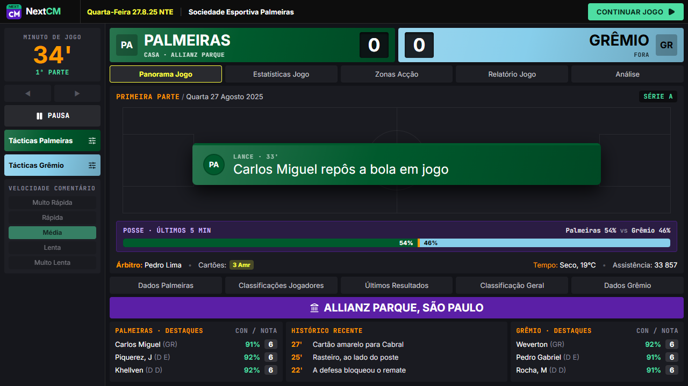

Dia de jogo
- Motor por lances, minuto a minuto, com relato em texto
- Mexer na táctica e substituir a meio do jogo
- Pré-Jogo e palestras antes, ao intervalo e no fim
O NextCM é um remake de fãs do Championship Manager 01/02: a mesma velocidade, a mesma densidade de informação, as mesmas telas. A diferença está no mundo, com a base de dados 2025/26.
Windows 10 ou 11 · ecrã de 1280×720 ou maior · grátis

O CM 01/02 ainda é jogado por uma comunidade enorme, graças a quem mantém os updates de pé. O NextCM nasceu da vontade de ter esse jogo, com o mesmo jeito de jogar, a correr num motor novo que dá para continuar a crescer.
A regra é simples: tem de parecer o CM 01/02. Coluna lateral, faixas com as cores do clube, botões roxos, diálogos verdes, sem animações a atrasar o jogo. O que é novo (pré-jogo, palestras, economia moderna) entra no mesmo estilo.
Feito em Rust, Tauri e React. Projeto de fãs, sem fins comerciais.
Achou um erro? Leia o guia do beta e abra uma Issue com a versão, os passos e o log.
A base de dados 2025/26 e o tema vêm do Update Coalizão, da equipe Coalizão CM, o maior acervo nacional de CM 01-02. Sem o trabalho deles, este jogo não teria plantéis. Lá estão também o Update para o CM original, databases, utilitários e tutoriais.
Visitar a Coalizão CMChampionship Manager é uma marca dos seus donos. O NextCM é um projeto de fãs independente, sem ligação à Sports Interactive, à Eidos ou à Square Enix.